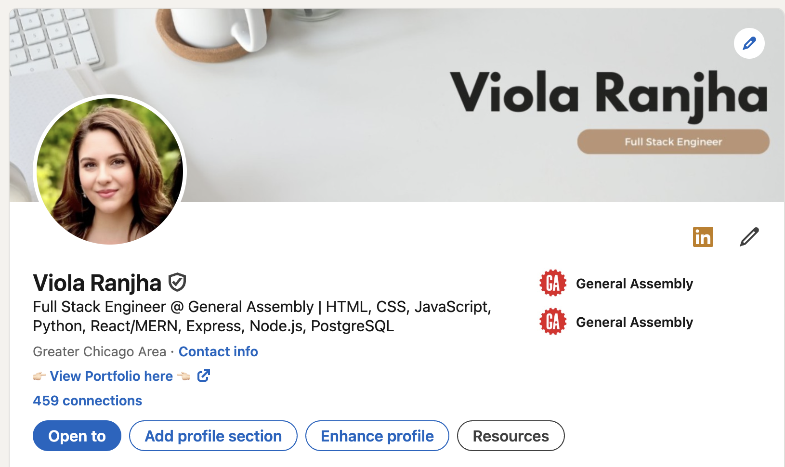
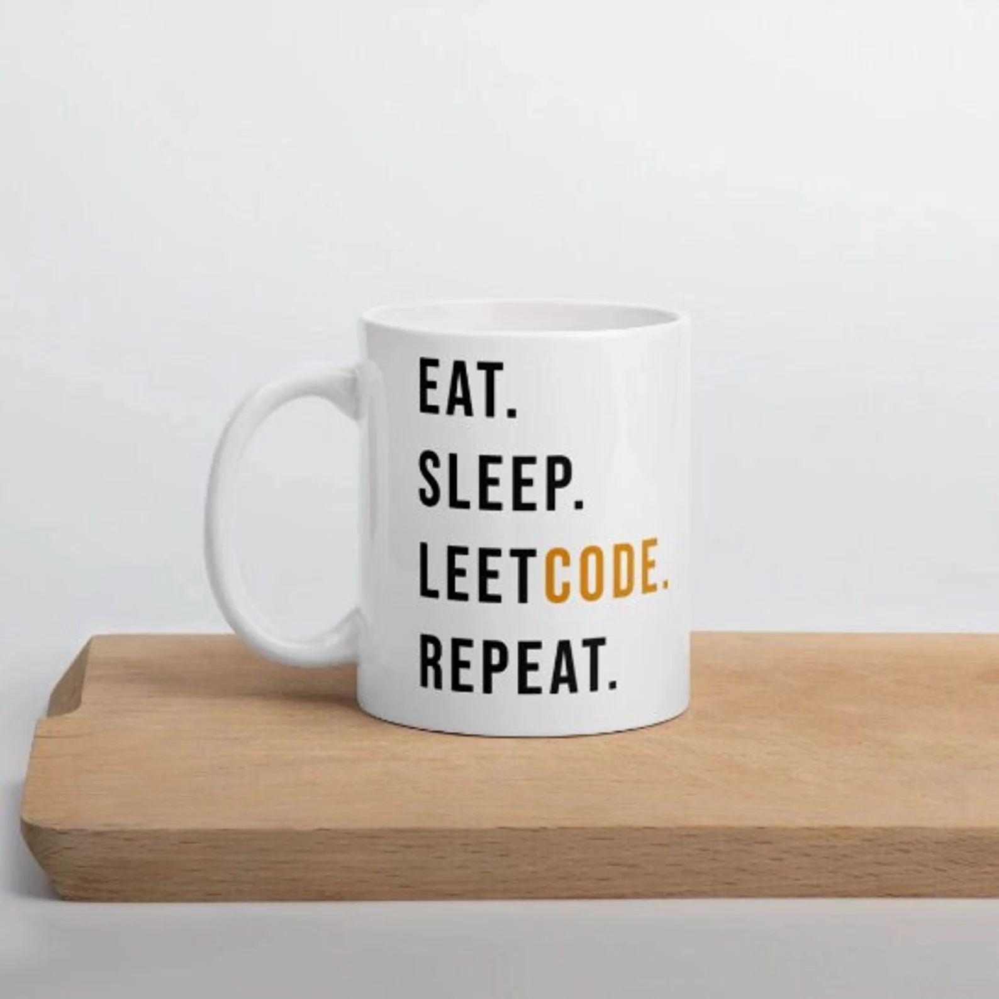

The Job Hunt: Landing My First Software Engineering Role
(Image Credit: LinkedIn)
From Bootcamp to Job Applications
Graduating from General Assembly was a huge milestone, but let’s be honest—the real challenge starts **after** the bootcamp. Now, I’m diving into the world of job applications, technical interviews, and LinkedIn networking.
Job hunting is **a full-time job in itself**, and I’ve quickly learned that **consistency and strategy** are key. Here’s a breakdown of what I’ve been doing to land my first software engineering role.
Optimizing My LinkedIn Profile
(Yes, LinkedIn is basically my second home now.)
If you’re job hunting in tech, your **LinkedIn profile is everything**. I made sure mine was fully updated with:
- ✅ A professional (but approachable) **profile picture**
- ✅ A compelling **headline** (e.g., "Full-Stack Engineer | JavaScript, Python, Django, React")
- ✅ A summary that **tells my story**—how I transitioned from finance to coding
- ✅ **Featured projects** with live links and GitHub repos
- ✅ Engaging **posts** about my learning journey
I’ve also been **actively networking**, reaching out to recruiters, and commenting on posts to stay visible. If you’re also job searching, **don’t sleep on LinkedIn!**
Applying Smart, Not Just Applying More
One of the biggest mistakes people make is **applying to 100+ jobs with the same generic resume**. Instead, I’m focusing on:
- 🎯 **Quality over quantity** – Tailoring my resume for each job
- 🎯 Using **keywords from job descriptions** to beat ATS filters
- 🎯 Reaching out directly to hiring managers and engineers
- 🎯 Applying to companies that align with my **tech stack and values**
It's tempting to apply everywhere, but focusing on **intentional applications** actually increases my chances of getting interviews.
Preparing for Technical Interviews
(This cute cup is from CodeSavant on Etsy.)
Coding interviews can be intimidating, but they’re also **just another skill to learn**. My prep routine includes:
- 💡 **LeetCode (Easy & Medium)** – Focusing on arrays, strings, and recursion
- 💡 **System design basics** – Understanding REST APIs, databases, and caching
- 💡 **Mock interviews** – Practicing whiteboarding with friends & mentors
- 💡 **Behavioral questions** – Using the **STAR method** (Situation, Task, Action, Result)
Interviews are nerve-wracking, but I’m taking it one step at a time. Progress over perfection!
Job Hunting: The Emotional Side
Let’s be real—job searching can be **mentally exhausting**. Some days I feel confident, and other days I get rejection emails before my coffee even kicks in. But here’s what’s helping me stay motivated:
- 💙 Celebrating **small wins** – Every interview, networking call, and coding challenge counts.
- 💙 Connecting with **other job seekers** – We’re all in this together.
- 💙 **Taking breaks** – Stepping away from the screen helps prevent burnout.
If you’re in the job search grind too, just know—**you’re not alone**. Keep going, because the right opportunity is out there!
Final Thoughts
🚀 **“You don’t have to be perfect. You just have to be persistent.”** 🚀
Every rejection is one step closer to the right role. I’m staying focused, **trusting the process**, and believing that my hard work will pay off.
Now, if you’ll excuse me, I have some more applications to send out… and probably another coding challenge to solve. ☕
📢 Let’s Connect!
Are you also job hunting? Let’s support each other! Connect with me on LinkedIn or check out my portfolio here.